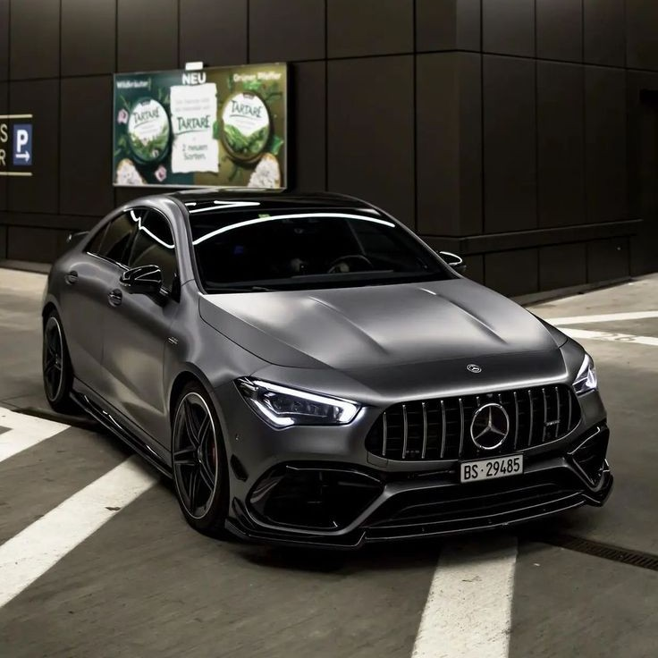
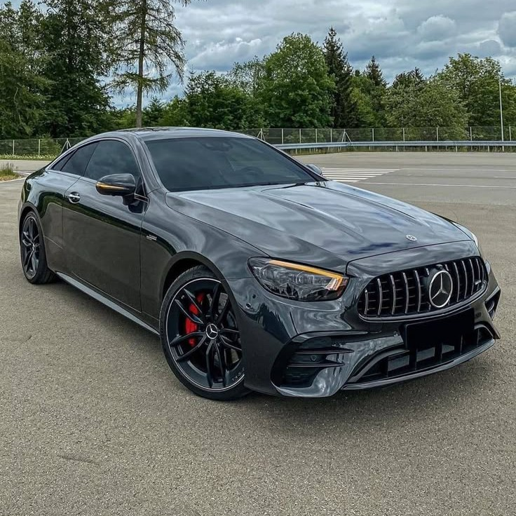
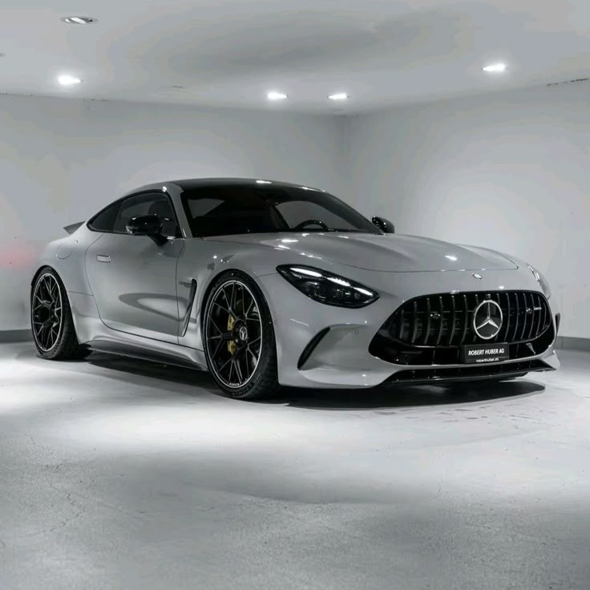

A nova edição do Mercedes-AMG CLA 35 4MATIC e do Mercedes-AMG CLA 45 S 4MATIC+ confirma a sua reputação como ícones de design expressivos. Agora ambos apresentam a grade do radiador específica da AMG com barras verticais, o emblema AMG no capô do motor e a saia dianteira AMG como um claro compromisso com a família AMG Performance. Além disso, há faróis mais marcantes, novas rodas de liga leve AMG[1] e lanternas traseiras em um novo design.
O Mercedes-AMG GT 63 S E PERFORMANCE Coupé de 4 portas funde classes de veículos aparentemente incompatíveis em um pacote extravagante: e isso inclui o design. Como o primeiro híbrido de performance da Mercedes-AMG, o GT 63 S E PERFORMANCE concentra-se em destaques elegantes que o identificam claramente como um veículo E PERFORMANCE. Além disso, o design frontal ainda mais refinado intensifica visivelmente o charme do veículo.
O design expressivo do Mercedes-AMG E 53 HYBRID 4MATIC+ combina a imagem superior do Classe E com os genes AMG genuínos. O lendário brasão AMG no capô, a grade do radiador iluminada específica da AMG com barras verticais em cromado de alto brilho e o para-choque dianteiro AMG com asa A e as marcantes entradas de ar conferem a este empolgante sedã executivo uma dianteira inconfundivelmente esportiva. A silhueta musculosa com suas amplas extensões de para-lamas realça o design já esportivo e resulta em uma traseira imponente. O para-choque traseiro AMG com difusor em preto e duas ponteiras de escape duplas redondas em cromado de alto brilho proporcionam um acabamento imponente. Uma aparência imponente e completa perfeita para a estrada e para o trabalho.
Adquirir um Mercedes-Benz é mais do que comprar um carro, é investir em inovação, conforto e tradição. Cada detalhe é pensado para entregar uma experiência de direção única.
Um Mercedes não é apenas um veículo, mas um símbolo de conquistas e estilo de vida. Dirigir um é sentir confiança, segurança e prazer em cada trajeto.
Enquanto muitos buscam números, a Mercedes-Benz busca excelência. Cada modelo carrega décadas de engenharia e compromisso em oferecer o melhor, sempre priorizando qualidade em cada detalhe.